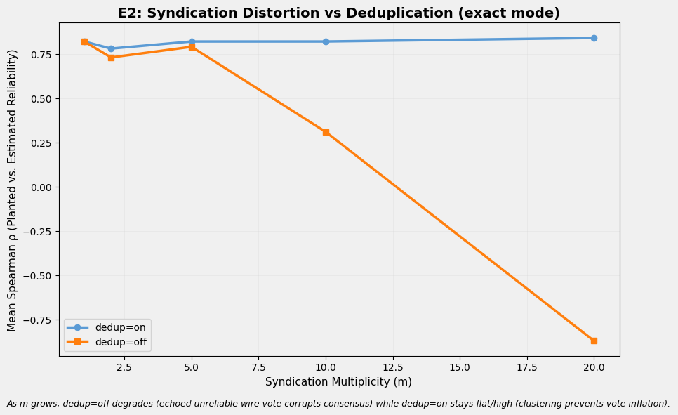

Streaming expectation-maximization estimates outlet consensus-agreement across 486,959 articles spanning 13,518 outlets and three corpora (ISOT: 42,681 articles/1 real outlet; FakeNewsNet: 21,575/2,531 domains; UCI: 422,703/10,980 outlets). Under synthetic ground truth, EM recovers planted parameters at ρ = 0.88. Wire-service duplication inverts recovery to ρ = −0.87; dedup voting repairs it fully. In-the-wild on FakeNewsNet's natural 341-outlet sample, consensus-agreement correlates negatively with fact-checker labels (ρ = −0.16, p = 0.003) — fabricated stories cluster, so consensus masquerades as corroboration.
Read →
Consensus-agreement estimates stabilize per outlet as streaming EM processes coverage batches. Wire-service syndication clusters articles; dedup voting identifies which outlets carry that cluster voice.
Read →HTTP Range streaming avoids full download. Simhash deduplication collapses syndication. Online expectation-maximization alternates E-step (infer event truth) and M-step (update outlet sensitivity) per Dawid-Skene. Full corpus stats and sample headlines.
Read →Six experiments: synthetic parameter recovery (ρ = 0.88), wire-duplication inversion (ρ = −0.87 at m=20, fully repairable), ISOT majority-capture irreparability (Reuters ranks 7/7), FakeNewsNet in-the-wild inversion (ρ = −0.16), and consensus-agreement null against MBFC factuality (ρ = −0.01).
Read →486,959
Total Articles
13,518
Total Outlets
10,461
Multi-outlet Events
6
Experiments
ρ = −0.16
FakeNewsNet Factuality Correlation (p=0.003)
| Run ID | Status | Created | Report |
|---|---|---|---|
| 2 | converged | 2026-06-10T04:07:40.203788 | View Report |
Online EM trained over ISOT (42,681 articles) via resumable HTTP Range streaming — no full dataset download required. View streaming training report.